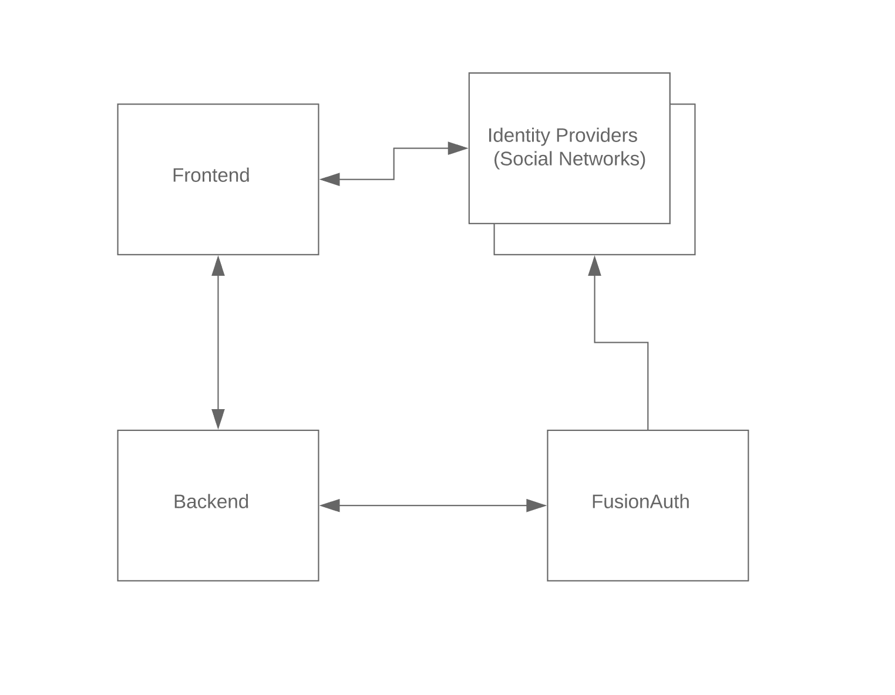

Authentication Schema
For user authentication, UniRoomy backend part uses the following authentication schema: 
FusioAuth
FusionAuth is an open-source user management system. Documentation: https://fusionauth.io/docs/v1/tech/getting-started/ FusionAuth UniRoomy server: http://uniroomy.co.uk:9011/admin
Basic Authentication
For basic authentication (email + password) /api/login endpoint should be used. In case of successful login backend returns { user, token } object. Where "token" is a JWT. Also, "access_token" cookie is initialized with the token during the endpoint call.
This token should be used to authorize all subsequent API calls. To authorize endpoint call, two methods could be used:
- Use access_token cookie
- Use HTTP header Authorization
Example of using Authorization header
curl -vS -H' Authorization: eyJh...bGciOiJSUzI1NiIsInROHAdwkO-zEA' --insecure "https://localhost:3003/api/"
Facebook Login
To make login with Facebook /api/facebook-login endpoint should be used. As a parameter to the call facebook_access_token should be passed. This token is returned from Facebook API call. As a result of a successful login { user, token } object is returned. The user email, first_name, and other fields are pulled from Facebook's Graph API and returned in "user" object. "token" is the same token returned from /api/login endpoint successful call.
Google Login
To make login with Google /api/google-login endpoint should be used. As a parameter to the call google_token_id should be passed. This token id is returned from google API call. As a result of a successful login { user, token } object is returned. The user email, first_name, and other fields are pulled from Google OAuth Token Info API and returned in "user" object. "token" is the same token returned from /api/login endpoint successful call.
Example of test React application which calls /api/facebook-login and /api/google-login endpoints
import React from 'react';
import FacebookLogin from 'react-facebook-login';
import GoogleLogin from 'react-google-login';
const responseFacebook = async (facebookResponse) => {
console.log(facebookResponse);
const { accessToken } = facebookResponse;
const loginResponse = await fetch(`https://uniroomy.co.uk:3003/api/facebook-login/?facebook_access_token=${accessToken}`)
const loginResult = await loginResponse.json();
console.log({ loginResult });
}
const responseGoogle = async (googleResponse) => {
console.log({googleResponse});
const { accessToken, tokenId } = googleResponse;
try {
const loginResponse = await fetch(`https://uniroomy.co.uk:3003/api/google-login/?google_token_id=${tokenId}`);
const loginResult = await loginResponse.json();
console.log({ loginResult });
}
catch (err) {
console.log({err});
}
}
function App() {
return (
<div>
<FacebookLogin
appId="538794743618570"
autoLoad={true}
fields="name,email,birthday,first_name,last_name"
// onClick={componentClicked}
callback={responseFacebook} />
<p />
<GoogleLogin
clientId="709112406460-5287iostb34n6mphd8su8r1g1mbh13ci.apps.googleusercontent.com"
buttonText="Login with Google"
onSuccess={responseGoogle}
onFailure={responseGoogle}
cookiePolicy={'single_host_origin'}
/>
</div>
);
}
export default App;
Registration of a new user
To register new user two methods could be used:
- Call
/api/registerendpoint - Call
/apiendpoint with addStudent/addLandlord GraphQL mutation
Both methods create person + student/landlord tuples and FusionAuth user with the corresponding role.
Example of /api/register endpoint calling
curl -vS --insecure -X POST -H "Content-Type: application/json" --data '{"email": "test24@test.test", "password": "A989890879", "first_name": "Jonny", "last_name": "Smith", "role": "Landlord" }' "https://localhost:3003/api/register"
Example of GraphQL mutation
mutation {
addStudent(input: {
university_id: 3
person: {
first_name: "John"
last_name: "Doe"
email: "test19@test.test"
password: "A12345678"
}
}) {
_id
}
}